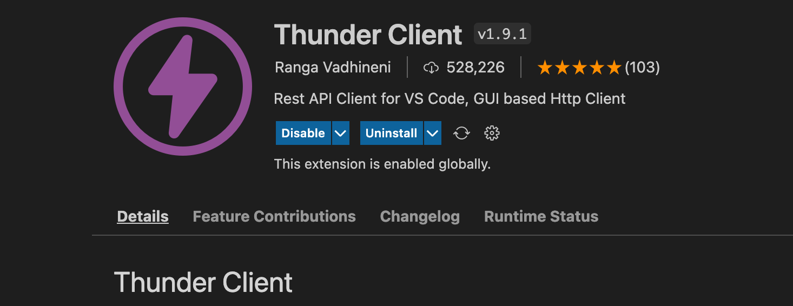
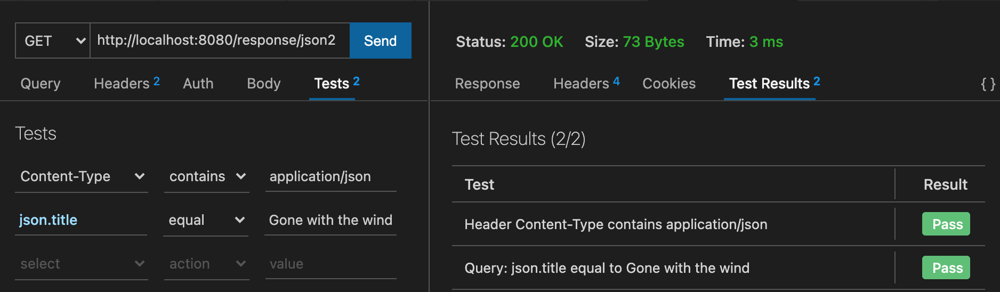
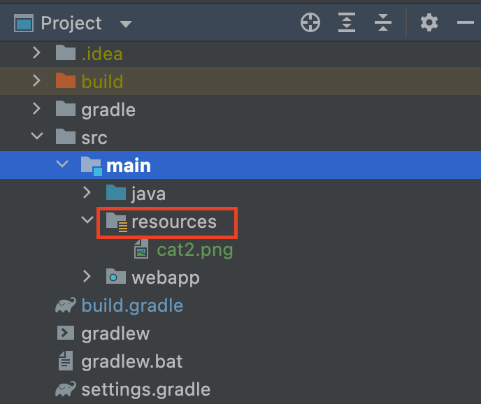

3.5 More About Response (1)
Previously, we either make a text/html response or forward the request to another resource. In this section, we will focus on response, and try to return something different.
JSON as response
JSON, short for JavaScript Object Notation, is a lightweight data-interchange format, and it is "self-describing" and easy to understand. For example, the JSON String {"name":"John", "age":30} defines an object with 2 properties, and each property has a value. JSON is widely used in the Internet, and a large number of web APIs returns JSON as their response.
The complete code can be found at JsonServlet.java in ch3/response. Similar to text/html, application/json is another MIME type to indicate it is JSON. The content type is to tell the client (e.g., browser) what you are sending back, so the browser can do the right thing. Note that we have to escape " within a string.
response.setContentType("application/json");
PrintWriter out = response.getWriter();
String json = "{\"name\":\"John\", \"age\":30}";
out.println(json);
Outputting JSON string directly is infrequent. Rather, in real word, we mainly need to convert an object to JSON. For example, in the mini MVC project, there is a model for books recommendation, and it would be better to design a class to represent a book.
public class Book {
private String title;
private float price;
private String author;
public Book(String title, float price, String author) {
this.title = title;
this.price = price;
this.author = author;
}
// getter/setter are omitted.
}
How can we convert a Book object to JSON? We often call the converting encoding/decoding. Unfortunately, neither Java SE nor Java EE provide built-in support for JSON processing. Should we write the encoding/decoding code on our own? No. Don't try to reinvent wheels. There are several awesome JSON libraries (e.g., Gson, Jackson) in the community. In this book, we use Gson to serialize and deserialize Java objects to JSON[1].
implementation 'com.google.code.gson:gson:2.8.9'
The complete code for serialization a Book can be found in Json2Servlet.java of ch3/response:
Book book = new Book("Gone with the wind", 29.0f, "Margaret Mitchell");
Gson gson = new Gson();
String json = gson.toJson(book);
Tools for testing APIs
The the last subsection, we enable the Java EE application to return JSON, instead of HTML, as responses. As we mentioned, JSON is the main data type transmitting between the client (e.g., Android) and the server used in API design. Recall the design-code-test cycle in Section 2.4. For those APIs, web browser is no longer the first choice for testing, because the rendering effect is not our concern. Instead, we would like a lightweight yet powerful tool concentrating on request and response.
For a long time, Postman is recognized and popular tool to simplify each step of the API lifecycle. And in the book, we will use Thunder Client, a lightweight Rest API Client Extension for Visual Studio Code.

And we can even write tests in its New Request window. In Fig 3.11, we added two tests: 1) Content-type contains application-json; 2) the returned JSON string's title is Gone with the wind:

Curious readers can further investigate how to harness this tool to help you developing design APIs. Good luck!
Binary as response
Binary here means a non-text resource, such as an image, an .exe file. Of course, in some cases, such static resources (e.g., .js and .css) can be accessed directly if they are parts of webapp or they are served by a dedicated web server.
But in rare situations, returning a binary resource as response is necessary. For example, we would like add some authentications to restrict the access; the returned binary resource is generated by code in real time; the returned binary resource is not governed by the web applications. Anyway, let's learn how to return a binary resource through servlets.
In what follows, we are going to return an image cat.png as the response. Code can be found at ch3/response. But it raises another question: where should we put this image in? Well, it can be many places.
- Case 1: cat.png is put under
webapp(a.k.a., webcontent, not in its subfolderWEB-INF).
Then this image can be accessed as a static resource via http://localhost:8080/response/cat.png directly. In order to output an image in servlets, again, we should use the stream.
response.setContentType("image/png");
ServletOutputStream os = response.getOutputStream();
The first line is to specify the content to image/png, and the second line is to get an output stream from response via getOutputStream(). Recall that for text output, we use its getWriter() method.
So the real difficulty is how to read cat.png as an input stream.
InputStream is = getServletContext().getResourceAsStream("cat.png");
getServletContext returns a reference to the ServletContext in which this servlet is running. So what is the ServletContext? You can regard it as the application context, an we will . And its getResourceAsStream() method is to read files under webapp as a stream. It does what exactly we want!
The next step is to enable the output stream output is to the client. As for PrintWriter, its println() method takes this responsibility, while as for ServletOutputStream, we should use write()[2]:
void write(byte[] b) Writes b.length bytes from the specified byte array to this output stream.
Therefore, if we can convert is into a byte array, the mission can be accomplished. And luckily, readAllBytes() is on call[3]. The complete code can found in ImageServlet.java of ch3/response
byte[] data = is.readAllBytes();
- Case 2: cat.png is put under
src/main(a.k.a, resource). And to avoid confusion, we use another imagecat2.png.
Maven project would has a template resources folder under src/main by default, and we need to create it manually in Gradle. It is the place where we put some resources for Java source code by convention.

After compiling, those resources would in the classpath. Similar to case 1, the main task is to get the input stream from this image:
InputStream is = getClass().getClassLoader().getResourceAsStream("cat2.png");
Strictly speaking, understanding getClass().getClassLoader() would require some background knowledge about how JVM loads classes. Here, you can simply interpret it as getting a root of classpath.
In fact, in order to enable the output stream output is to the client, another solution can make it without introducing the byte array. Take the case 1 for example,
Path source = Path.of(getServletContext().getResource("cat.png").toURI());
Files.copy(source, os);
The first line is to get the path of the resource, and the second line is to copy the resource to the output stream[4]. Readers can try the new solution for the case 2.
A final note for response
As for response, we have got two choices for output: ServletOutputStream for bytes, or a PrintWriter for character data. Essentially, the PrintWriter wraps the ServletOutputStream. In other words, the PrintWriter has a reference to the ServletOutputStream and delegates calls to it. It makes sense because any character will be interpreted as bytes in the runtime. Such design, which adds higher-level method by hiding low-level operations is very common in programming. For example, Files.copy() is another higher-level method to hide bytes.
[1] Converting an object to JSON string is called serialize, and converting JSON string to an object is called deserialize.
[2] ServletOutputStream also provides println()/print(), but they cannot deal with stream directly.
[3] The language should be set to at least 9.
[4] The language should be set to at least 11.